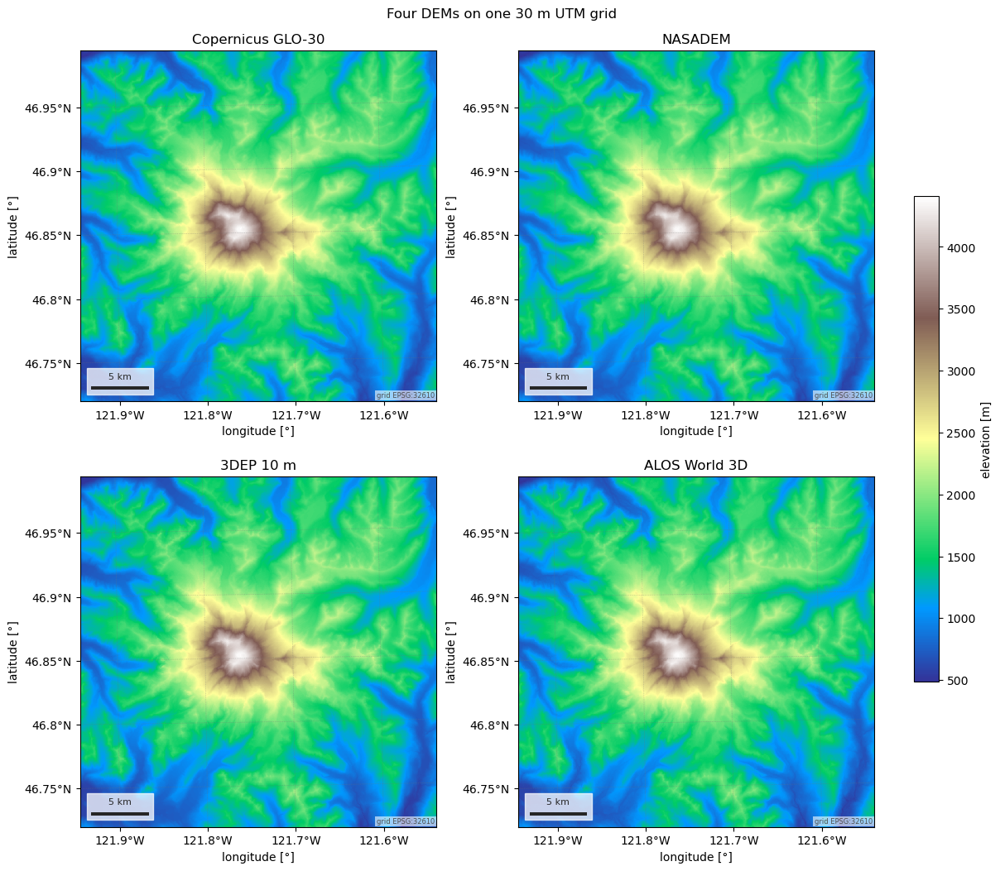
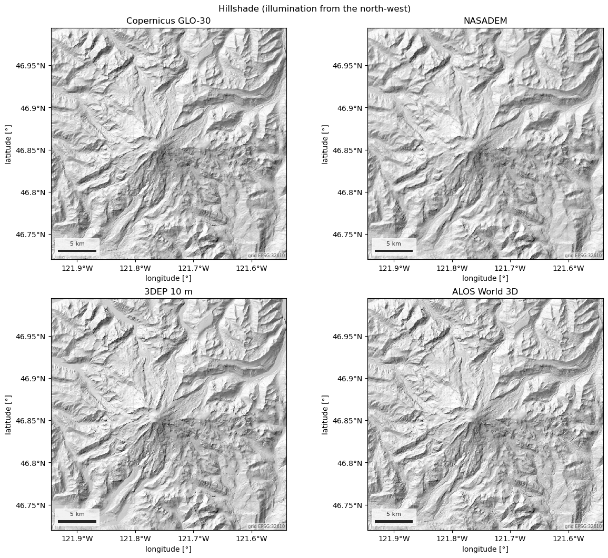
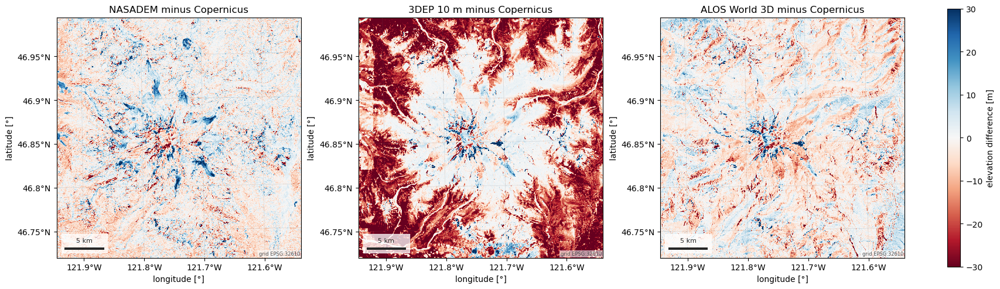
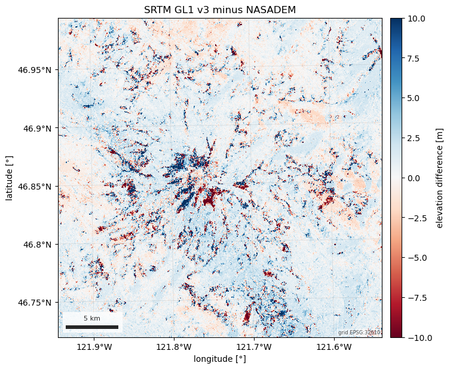

Note
Go to the end to download the full example code.
Digital elevation models: Copernicus, NASADEM, SRTM, 3DEP, ALOS#
Five DEMs behind one esd.terrain.dem.load: Copernicus GLO-30 (the
default: TanDEM-X radar, 2011-2015), NASADEM and SRTM (the February 2000
shuttle radar surface, reprocessed and original), USGS 3DEP (lidar-based,
10 m, United States only) and ALOS World 3D (optical stereo, 2006-2011).
esd.terrain.dem.compare() tabulates how they differ and
esd.terrain.dem.search() lists the tiles a STAC route would read.
Every product except SRTM has a credential-free route on the Planetary
Computer (source="planetary-computer", the default); Copernicus is also
on Earth Search (source="earth-search", unsigned AWS). Each has an Earth
Engine route as well (source="gee", needs esd.auth.login("earthengine")),
which is the only route to SRTM proper and to the newer 2024_1 edit of
Copernicus GLO-30.
The figures put four of them on one 30 m UTM grid over Mount Rainier: elevation with a shared colour scale, a hillshade that shows what 10 m lidar sees that 30 m radar does not, and difference maps against Copernicus. The differences are then split by land cover, because 3DEP is a bare-earth terrain model while the other four are surface models: over forest the two disagree by a canopy height, over bare rock and snow by the metre or so that separates their vertical datums (NAVD88 against EGM2008 and EGM96).
import matplotlib.pyplot as plt
import numpy as np
import pandas as pd
from matplotlib.colors import LightSource
import easysnowdata as esd
aoi = (-121.94, 46.72, -121.54, 46.99) # Mount Rainier, WA
box = esd.parse_aoi(aoi)
print(box)
AOI(bounds=(-121.9400, 46.7200, -121.5400, 46.9900), clip=True)
Where each DEM comes from, and which routes need an account.
for product in esd.terrain.dem.PRODUCTS:
for src in esd.catalog.get(product).sources:
print(
f"{product:15} {src.id:19} {src.title:32} "
f"{', '.join(src.requires) or 'no account'}"
)
copernicus-dem planetary-computer Planetary Computer no account
copernicus-dem earth-search Earth Search (AWS Open Data) no account
copernicus-dem gee Earth Engine (2024_1 release) earthengine
nasadem planetary-computer Planetary Computer no account
nasadem gee Earth Engine earthengine
srtm gee Earth Engine earthengine
3dep planetary-computer Planetary Computer no account
3dep gee Earth Engine earthengine
alos-dem planetary-computer Planetary Computer no account
alos-dem gee Earth Engine (v4.1) earthengine
The comparison table load chooses from: resolution, extent, acquisition
dates, vertical datum, what kind of surface, routes and credentials.
with pd.option_context(
"display.width", 200, "display.max_columns", 20, "display.max_colwidth", 60
):
print(esd.terrain.dem.compare())
title resolution_m extent acquired vertical_datum \
product
copernicus-dem Copernicus DEM GLO-30 / GLO-90 30 / 90 global static (2021 release; acquired 2011-2015) EGM2008
nasadem NASADEM (SRTM reprocessed) 30 60°N to 56°S static (acquired February 2000; released 2020) EGM96
srtm SRTM GL1 v3 (30 m) 30 60°N to 56°S static (acquired February 2000; v3 2013) EGM96
3dep USGS 3DEP seamless DEM (10 m / 30 m, United States) 10 / 30 United States static (tile dates 1925-2020; updated as lidar arrives) NAVD88
alos-dem ALOS World 3D-30m (AW3D30) 30 global static (acquired 2006-2011; v3.2 2021) EGM96
surface sources credential_free
product
copernicus-dem digital surface model (X-band InSAR, TanDEM-X 2011-2015) planetary-computer, earth-search, gee True
nasadem digital surface model (C-band InSAR, SRTM February 2000,... planetary-computer, gee True
srtm digital surface model (C-band InSAR, SRTM February 2000,... gee False
3dep bare-earth digital terrain model (lidar and legacy sourc... planetary-computer, gee True
alos-dem digital surface model (optical stereo, ALOS PRISM 2006-2... planetary-computer, gee True
Four products on one grid. crs="utm" and grid_resolution=30 put
every product on the AOI’s UTM zone at 30 m, so the arrays line up
pixel for pixel whatever grid each was published on (Copernicus, NASADEM
and ALOS are 1 arc-second tiles in EPSG:4326; 3DEP is 1/3 arc-second in
the NAD83 + NAVD88 compound CRS EPSG:5498).
grid = {"crs": "utm", "grid_resolution": 30, "chunks": None}
dems = {
"Copernicus GLO-30": esd.terrain.dem.load(aoi, **grid),
"NASADEM": esd.terrain.dem.load(aoi, product="nasadem", **grid),
"3DEP 10 m": esd.terrain.dem.load(aoi, product="3dep", resolution=10, **grid),
"ALOS World 3D": esd.terrain.dem.load(aoi, product="alos", **grid),
}
for name, dem_da in dems.items():
print(
f"{name:18} {dem_da.sizes['y']}x{dem_da.sizes['x']} px "
f"{dem_da.attrs['vertical_datum']:8} {dem_da.attrs['surface']}"
)
reference_da = dems["Copernicus GLO-30"]
Copernicus GLO-30 1017x1033 px EGM2008 digital surface model (X-band InSAR, TanDEM-X 2011-2015)
NASADEM 1017x1033 px EGM96 digital surface model (C-band InSAR, SRTM February 2000, reprocessed and void-filled)
3DEP 10 m 1017x1033 px NAVD88 bare-earth digital terrain model (lidar and legacy sources, mixed dates)
ALOS World 3D 1017x1033 px EGM96 digital surface model (optical stereo, ALOS PRISM 2006-2011)
Elevation on a shared colour scale. The four look alike at this scale, which is the point: the choice of DEM matters in the differences, not in the map.
vmin = min(float(dem_da.min()) for dem_da in dems.values())
vmax = max(float(dem_da.max()) for dem_da in dems.values())
fig, axes = plt.subplots(2, 2, figsize=(12, 10.5), layout="constrained")
for ax, (name, dem_da) in zip(axes.ravel(), dems.items()):
esd.plotting.map(
dem_da, ax=ax, cmap="terrain", vmin=vmin, vmax=vmax, colorbar=False, title=name
)
fig.colorbar(
axes[0, 0].images[0],
ax=axes.ravel().tolist(),
shrink=0.6,
label=esd.plotting.label(reference_da, name="elevation"),
)
fig.suptitle("Four DEMs on one 30 m UTM grid")

Text(0.5, 0.9960314285714286, 'Four DEMs on one 30 m UTM grid')
A hillshade shows what the colour scale hides. Light from the north-west at 45°: 3DEP’s lidar resolves moraines and gullies that the 30 m radar and stereo models smooth over, and the radar models show speckle on the glaciers.
light = LightSource(azdeg=315, altdeg=45)
fig, axes = plt.subplots(2, 2, figsize=(12, 10.5), layout="constrained")
for ax, (name, dem_da) in zip(axes.ravel(), dems.items()):
shade = light.hillshade(np.nan_to_num(dem_da.values), vert_exag=1, dx=30, dy=30)
x, y = dem_da.x.values, dem_da.y.values
ax.imshow(
shade, cmap="gray", extent=(x[0], x[-1], y[-1], y[0]), interpolation="nearest"
)
ax.set_title(name)
esd.plotting.finish_map(ax, dem_da.rio.crs)
fig.suptitle("Hillshade (illumination from the north-west)")

Text(0.5, 0.9960314285714286, 'Hillshade (illumination from the north-west)')
Differences against Copernicus. The vertical datums differ (NAVD88 for 3DEP, EGM96 for NASADEM and ALOS, EGM2008 for Copernicus), so a constant offset of order a metre is expected before any real difference; the structure in the maps is what is left after that.
differences = {
f"{name} minus Copernicus": (dem_da - reference_da).assign_attrs(
long_name="elevation difference", units="m"
)
for name, dem_da in dems.items()
if name != "Copernicus GLO-30"
}
fig, axes = plt.subplots(1, 3, figsize=(17, 5.6), layout="constrained")
for ax, (name, diff_da) in zip(axes, differences.items()):
esd.plotting.map(
diff_da, ax=ax, cmap="RdBu", vmin=-30, vmax=30, colorbar=False, title=name
)
fig.colorbar(
axes[0].images[0],
ax=list(axes),
shrink=0.8,
label=esd.plotting.label(next(iter(differences.values()))),
)
for name, diff_da in differences.items():
print(
f"{name:32} median {float(diff_da.median()):6.2f} m "
f"spread (16-84 %) {float(diff_da.quantile(0.16)):6.2f} to "
f"{float(diff_da.quantile(0.84)):6.2f} m"
)

NASADEM minus Copernicus median -0.69 m spread (16-84 %) -6.38 to 5.14 m
3DEP 10 m minus Copernicus median -9.32 m spread (16-84 %) -27.86 to 0.98 m
ALOS World 3D minus Copernicus median -1.40 m spread (16-84 %) -6.80 to 3.75 m
Terrain model against surface models. Split 3DEP minus Copernicus by ESA WorldCover class on the same grid: over tree cover the lidar terrain sits well below the radar surface, over snow, bare rock and grass the two agree to about the datum offset. The forest number is a canopy height, not an error in either product.
landcover_da = esd.land.landcover.load(aoi, **grid)
canopy_da = differences["3DEP 10 m minus Copernicus"]
classes_df = esd.processing.categorical.flags(landcover_da)
rows = []
for value, meaning in zip(classes_df["value"], classes_df["meaning"]):
pixels = landcover_da.values == value
if pixels.sum() < 1000:
continue
rows.append(
{
"land cover": meaning.replace("_", " "),
"pixels": int(pixels.sum()),
"median 3DEP - Copernicus [m]": round(
float(np.nanmedian(canopy_da.values[pixels])), 2
),
}
)
print(pd.DataFrame(rows).set_index("land cover").to_string())
pixels median 3DEP - Copernicus [m]
land cover
Tree cover 724311 -18.17
Grassland 105722 0.45
Bare / sparse vegetation 91072 0.94
Snow and ice 110192 0.32
Permanent water bodies 5632 1.01
Moss and lichen 13212 0.96
The Earth Engine routes. product="srtm" is SRTM GL1 v3 proper (Earth
Engine only), source="gee" on Copernicus is the newer 2024_1 edit of
GLO-30. They are compared with the STAC copies on the products’ own
1 arc-second grid rather than the UTM grid above: the STAC and Earth Engine
routes resample with different kernels, and on slopes this steep that alone
is several metres, which would hide what is being compared.
The box is loaded with a 1 km margin so the UTM grid the map uses is covered.
margin = box.buffer(1000)
copernicus_2021_da = esd.terrain.dem.load(margin, chunks=None)
copernicus_2024_da = esd.terrain.dem.load(margin, source="gee", chunks=None)
nasadem_da = esd.terrain.dem.load(margin, product="nasadem", chunks=None)
srtm_da = esd.terrain.dem.load(margin, product="srtm", chunks=None)
pairs = {
"Copernicus 2024_1 minus 2021": copernicus_2024_da.interp_like(
copernicus_2021_da, method="nearest"
)
- copernicus_2021_da,
"SRTM GL1 minus NASADEM": srtm_da.interp_like(nasadem_da, method="nearest")
- nasadem_da,
}
for name, diff_da in pairs.items():
print(
f"{name:30} median {float(diff_da.median()):5.2f} m "
f"pixels within 1 m: {float((abs(diff_da) < 1).mean()) * 100:5.1f} %"
)
Copernicus 2024_1 minus 2021 median 0.00 m pixels within 1 m: 99.9 %
SRTM GL1 minus NASADEM median 1.00 m pixels within 1 m: 25.2 %
Over this box the 2024_1 edit did not touch a pixel, so the map worth drawing is the other one. NASADEM is not SRTM with its voids filled: the reprocessing re-unwrapped the radar phase and re-registered the tiles, and on Rainier’s slopes the surface moved by metres either way.
diff_da = pairs["SRTM GL1 minus NASADEM"].assign_attrs(
long_name="elevation difference", units="m"
)
esd.plotting.map(
diff_da.odc.reproject(
box.to_geobox(crs="utm", resolution=30), resampling="bilinear"
),
cmap="RdBu",
vmin=-10,
vmax=10,
title="SRTM GL1 v3 minus NASADEM",
)

<Axes: title={'center': 'SRTM GL1 v3 minus NASADEM'}, xlabel='longitude [°]', ylabel='latitude [°]'>
search returns the tiles a STAC route would read, as a GeoDataFrame.
3DEP tiles carry the date of their newest source, which is how to tell
lidar from legacy coverage before loading anything.
tiles_gdf = esd.terrain.dem.search(aoi, product="3dep", resolution=10)
print(
tiles_gdf[["gsd", "start_datetime", "end_datetime", "threedep:region"]].to_string()
)
gsd start_datetime end_datetime threedep:region
n47w122-13 10 1956-01-01T00:00:00Z 2016-12-31T00:00:00Z n40w130
Total running time of the script: (0 minutes 56.195 seconds)